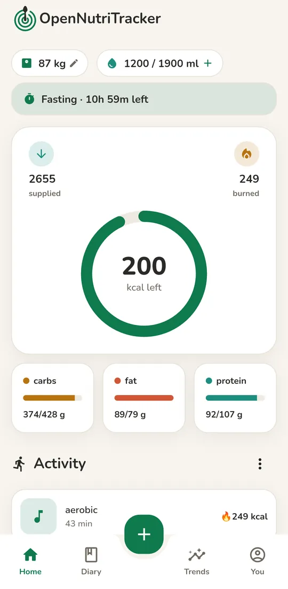
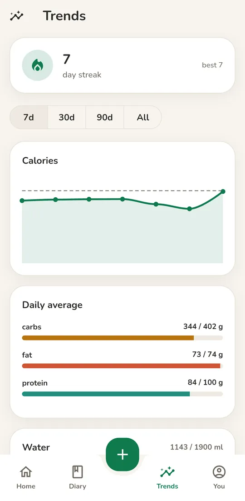
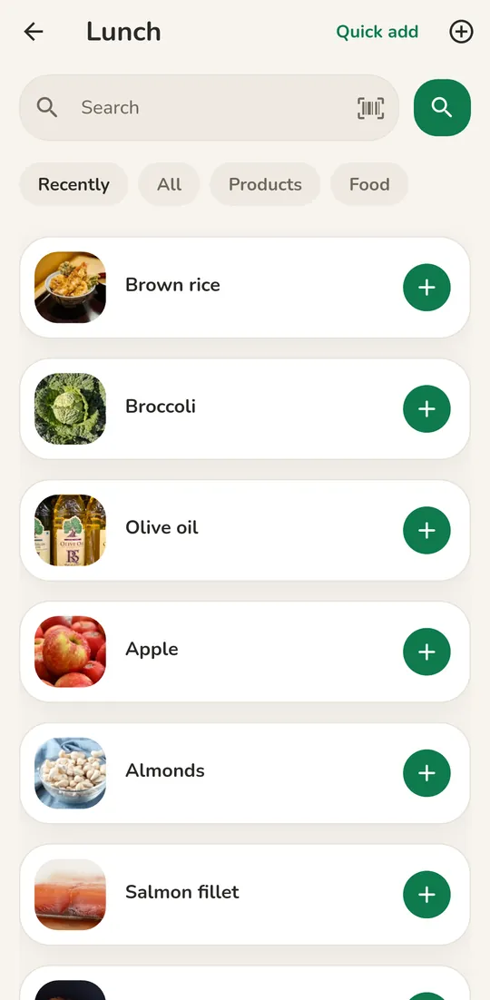
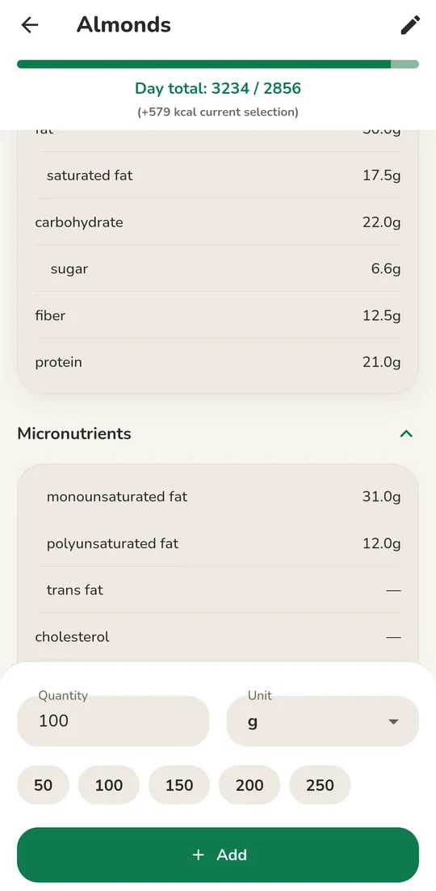
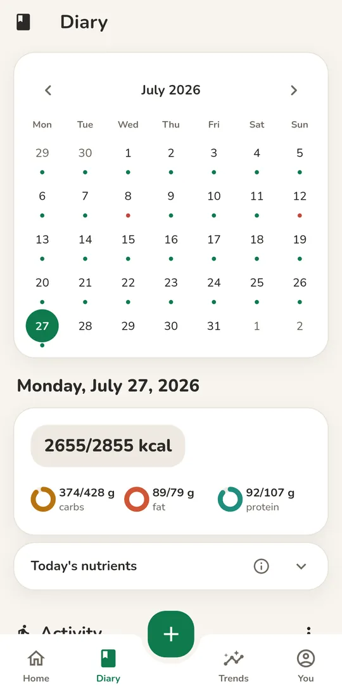
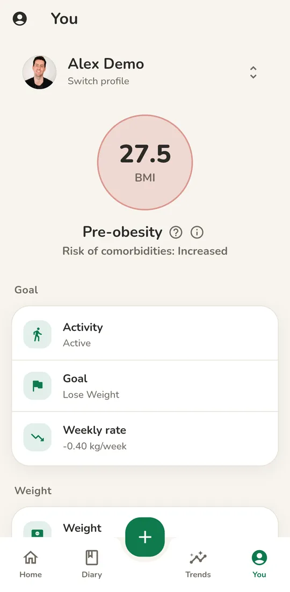

Free. Open. Cited.
Log your food. Keep the diary on your phone.
OpenNutriTracker is an open-source calorie and nutrient diary for Android and iOS. It has no account, no ads, and no paid tier.


What it does
The app works out a calorie target and a macro target. Calories are measured in kcal. Macros are carbs, fat, and protein. It uses your height, weight, age, and activity level. You log food and drink against that target.
- Carbs
- Fat
- Protein
-
Food logging
Search for a food, scan its barcode, or add kcal as a plain number. Food data comes from Open Food Facts, USDA FoodData Central, and the German BLS food table.
-
Food diary
A calendar diary with Breakfast, Lunch, Dinner, and Snack. Each meal can have its own kcal target.
-
Trends
See your day streak, your calories against your goal line, your macro averages, your water, and your weight over time.
-
Nutrient panel
Day and week views for ten nutrients, including fiber, sodium, iron, and vitamin D. Optional bars show where you sit against the reference range.
-
Meals and recipes
Save a custom meal or a reusable recipe. Add a photo, a brand, and a barcode.
-
Activities and weight
Log workouts from a catalog or make your own. Follow your weight trend against a target.
-
Water and fasting
A water counter sits on the home screen. An optional timer supports intermittent fasting, which means eating only within set hours. The timer opens with a content warning.
-
Themes and units
Pick one of sixteen built-in themes. On Android 12 and later, you can use your system accent color. Show energy in kcal (kilocalories) or kJ (kilojoules).
-
Export and import
Export your diary as JSON or CSV files. These are plain file formats that other tools can read. Import JSON again later. Share a meal as a QR code.
Six screens
Screenshots show a demo profile with generated data.
-
HomeWhere the day stands -

Add foodLog it again in one tap -

Food detailDown to the micronutrient -

DiaryEvery day you have logged -
TrendsCalories against your goal -

YouGoals and body metrics
Private and open
No account. No sign-in. No analytics. No ads.
Your diary stays on your phone. The code is open under the GPL-3.0 license, so anyone can read it.
- Stored on your phone
- Your diary uses AES-256 encrypted storage, a standard strong encryption method. The key stays in the Android Keystore or the iOS Keychain. The app never sends it.
- Delete it in one step
- Choose Delete all my data in Settings. It wipes the active profile.
- What leaves your phone
- Food search sends your search term and your language code to Open Food Facts and to the food backend. Other destinations are optional. The README privacy section lists all of them.
- Free for good
- There is no paid tier and no ad code. The nutrient panel is free too. The GPL-3.0 license means the code stays open.
- Cited numbers
- Calorie targets follow the Institute of Medicine (IOM) 2005. BMI (body mass index) follows the World Health Organization (WHO). Macros follow WHO TRS 916. Activity burn follows the 2024 Compendium. A Sources and References screen in the app links each paper.
- Open food data
- Food data comes from Open Food Facts, USDA FoodData Central, and the German BLS. The food backend is its own open repository. You can host it yourself.
Get it. Help build it.
Over 30 developers have contributed code. The app is available in eleven languages.
Translate
Translate in your browser on Weblate. You need no Dart and no local setup.
Translate on WeblateWrite code
Issues and pull requests are welcome. A pull request is a proposed code change. Target the develop branch. The app uses Flutter and Dart.